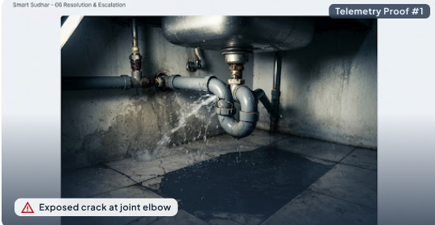

CIVIC AUDIT SYSTEM
• Public Work Order #SS-3912
Awaiting Citizen Verification
Resolution Verification & Sign-off
Staff has marked this issue as FIXED
Your verification completes the civic repair loop. Tickets close permanently only upon reporter confirmation.
Auto-escalation deadline: 21 hrs left
BEFORE REPAIR

AFTER REPAIR
RK
⏱ TIME ON SITE: 1 hr 45 min
Technician Work Log & Diagnostic Statement
Department of Water Management & Sanitary Operations
"Replaced fractured 1.5-inch PVC elbow fitting with high-pressure rated joint. Replaced washer, applied Teflon seal and solvent weld. Pressure tested under full load for 20 minutes with zero seepage. Surrounding floor sanitized."
Component A
1.5" PVC Elbow (Sch-40)
Muni-Spec Standard
Sealing Material
Teflon Tape & Weld
Dual Barrier
Stress Test
20 min @ 4.2 Bar
Passed 100%
Sanitation Grade
Sodium Hypo 1%
Dry & Decontaminated
CITIZEN GOVERNANCE AUTHORITY
Does this fix resolve the problem satisfactorily?
Your verification permanently closes this work order and logs positive performance credits for the technician. Reopening triggers immediate supervisor review.
Public Audit Ledger & Event Provenance
Chain ID: #SS-DEL-2024-884Immutable sequence recorded under Smart Sudhar transparency protocol
●
Issue Reported by Citizen
Oct 24 • 08:30:12 AM
Geo-tagged photo submitted via Mobile App by Aarav Sharma
●
Triage & Automated Work Order Dispatched
Oct 24 • 08:42:00 AM
Auto-classified as Sanitary Plumbing Critical (SLA: 6 hrs). Assigned to Rajesh Kumar.
●
Technician Arrived On-Site
Oct 24 • 12:30:45 PM
NFC Check-in confirmed at Ward 4B Facilities Gate
✓
Repair Completed & Pressure Tested
Oct 24 • 02:15:20 PM
Technician uploaded photographic resolution proof and diagnostic log
●
Pending Reporter Verification
Active Right Now
Waiting on Aarav Sharma sign-off. Work order cannot be closed unilaterally by crew.
Cryptographic Signature Verification Enabled • Smart Sudhar Municipal Charter v4.2